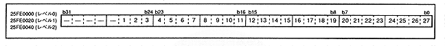
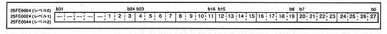

There are three types of DMA, from the highest priority level 2 to the lowest level 0. Detailed explanation is given below.
● Read address
Figure 3.1 shows the details of the read address register. There are direct and indirect DMA modes, but the meaning of the value changes in each mode.
Figure 3.1 Level 2-0 read address (registers: D0R, D1R, D2R) Initial value is undefined

Read address (1 to 27 [bit 26 to 0] in Figure 3.1) DxR26-0 [x = 2-0] (R / W) DMA level 2-0 Read address bit26-0
In direct mode, the stored value is the transfer source address. On the other hand, it has no meaning in indirect mode. When the DMA is operating, the register at that level is write-protected. All address values are expressed in bytes.
Export address
Figure 3.2 shows the details of the write address register. There are direct and indirect DMA modes, but the meaning of the value changes in each mode.
Figure 3.2 Level 2-0 write address (Register: D0W, D1W, D2W) Initial value is undefined

Write address (1 to 27 [bit 26 to 0] in Figure 3.2) DxW26-0 [x = 2-0] (R / W) DMA level 2-0 Write address bit26-0
In direct mode, the stored value is the forwarding address. On the other hand, in the indirect mode, the address where the transfer source address of the first DMA transfer is stored is stored. When the DMA is operating, the register at that level is write-protected. All address values are expressed in bytes.